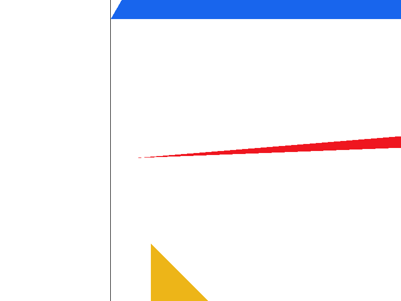
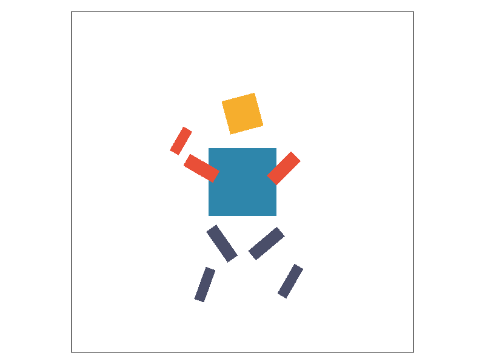
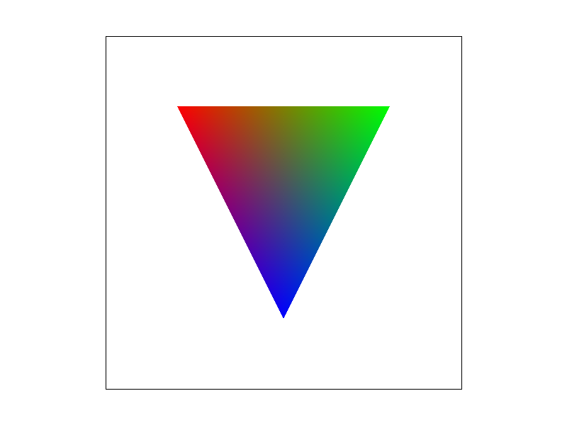
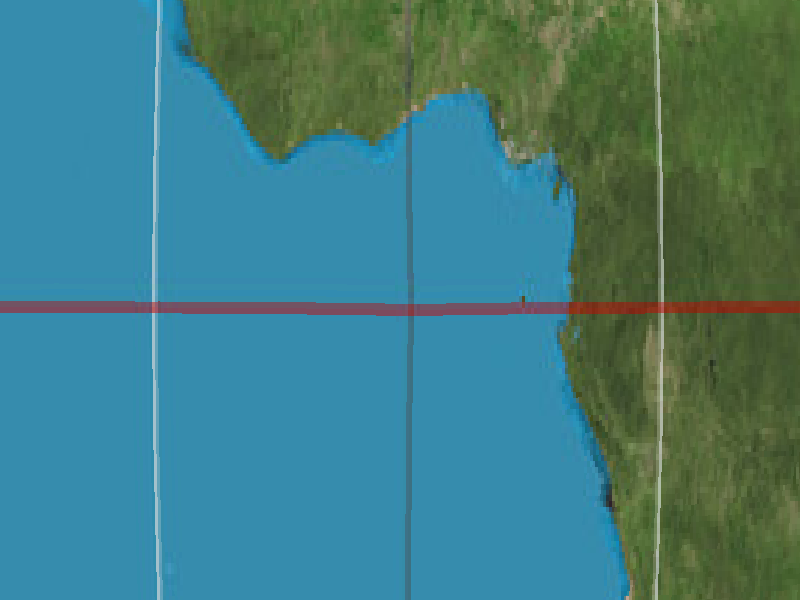
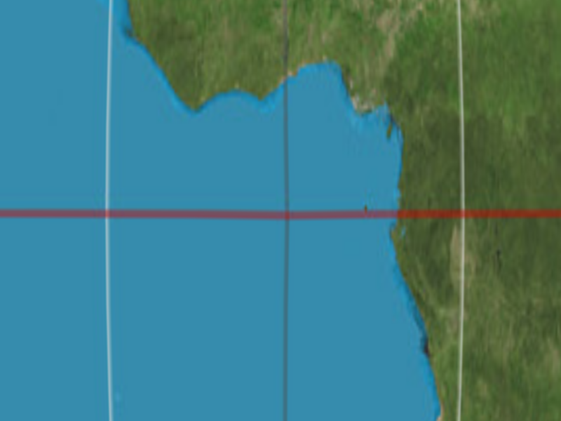
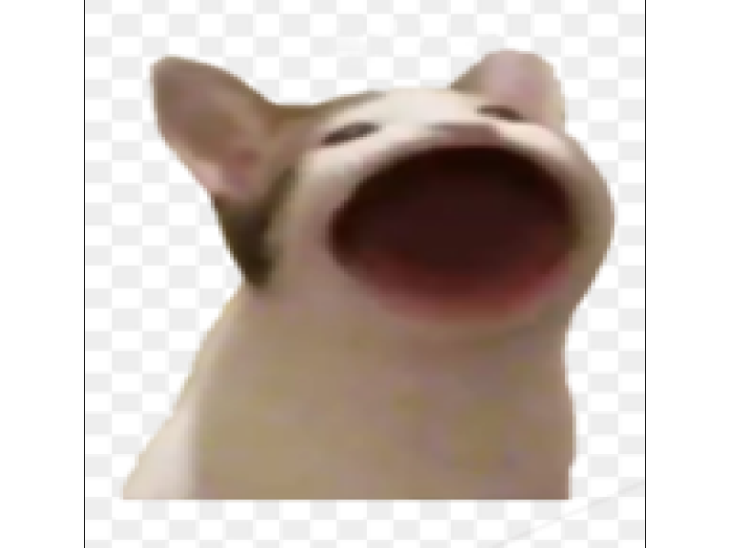
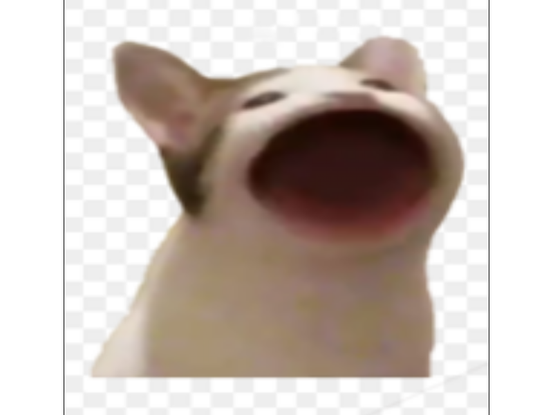

CS184/284A Spring 2025 Homework 1 Write-Up
Link to webpage: https://innoka-uka.github.io/cs184-sp26-hw-webpages-hw-webpage/
Link to GitHub repository: https://github.com/cal-cs184-student/hw1-rasterizer-vme50

Overview
In this homework, I implemented a software rasterizer from scratch, covering the entire 2D rendering pipeline.
Core Rasterization: I started by implementing triangle rasterization using the bounding box method and edge functions to determine which pixels are inside a triangle.
Antialiasing: To remove jagged edges (aliasing), I implemented supersampling, where I sample multiple points per pixel and average the results.
Transformations: I implemented 2D transformations (translation, scaling, rotation) using 3x3 homogeneous coordinates to manipulate geometric objects.
Texture Mapping: Finally, I added texture mapping support with two key techniques:
- Pixel Sampling: Nearest Neighbor and Bilinear interpolation to sample colors from textures.
- Level Sampling (Mipmapping): Using mipmaps to optimize texture sampling and reduce aliasing at different scales.
This homework gave me a deep understanding of how graphics pipelines work, from geometry processing to rasterization and texture sampling.
Task 1: Drawing Single-Color Triangles
Walkthrough of Triangle Rasterization Algorithm
My triangle rasterization algorithm uses the bounding box method combined with the edge function to determine which pixels are inside the triangle.
Algorithm Steps:
- Compute Bounding Box: I first calculate the minimum and maximum x and y coordinates of the triangle's vertices to define the bounding box.
- Clamp to Framebuffer: The bounding box is clamped to the framebuffer dimensions to avoid iterating outside the screen.
- Iterate Pixels: I iterate over every pixel (x, y) within the bounding box.
- Edge Function Test: For each pixel, I use the edge function method to check if the point is inside the triangle.
- Fill Pixel: If the point is inside (or on the boundary), I write the color to the sample buffer.
Why is this efficient?
This algorithm is no worse than checking every sample within the bounding box because:
- The bounding box is the smallest rectangle that encloses the triangle. Any algorithm that checks every sample within the bounding box must check at least as many pixels as my algorithm.
- By using the edge function, I can efficiently reject pixels that are clearly outside the triangle without complex mathematical operations.
- The complexity is O(W * H) where W and H are the width and height of the bounding box, which is optimal for rasterizing a single triangle.
Here is the code I used to implement the triangle rasterization:
// Compute the bounding box of the triangle
float min_x = std::min({x0, x1, x2});
float max_x = std::max({x0, x1, x2});
float min_y = std::min({y0, y1, y2});
float max_y = std::max({y0, y1, y2});
// Iterate over each pixel in the bounding box
for (int y = start_y; y <= end_y; y++) {
for (int x = start_x; x <= end_x; x++) {
// Check if pixel is inside triangle using edge function
// ...
if (inside) {
sample_buffer[index] = color;
}
}
}Screenshots of basic triangles rendered using this algorithm.

|
Task 2: Antialiasing by Supersampling
Walkthrough of Supersampling Algorithm and Data Structures
Overview
My supersampling implementation rasterizes triangles at a higher resolution and then downsamples to produce antialiased edges. The key idea is to sample multiple points within each pixel and average their colors.
Data Structures
- sample_buffer: A vector of Color objects that stores all supersamples. Size:
width * height * sample_rate. - sample_rate: Member variable that determines the number of supersamples per pixel.
Algorithm Walkthrough
1. Rasterization Phase: For each pixel in the triangle's bounding box, divide the pixel into a grid and sample at each grid location using edge functions. Write to sample_buffer if inside.
2. Downsampling Phase: For each pixel in the framebuffer, accumulate all sample_rate color values and divide by sample_rate to compute the average.
Why is Supersampling Useful?
Supersampling reduces jagged edges (aliasing), handles partial pixel coverage, and is simple to implement.
How Supersampling Antialiases Triangles
For a pixel on the triangle edge, some supersamples will be inside the triangle (colored) and some will be outside (background). Averaging smooths the result.
Here are screenshots of basic/test4.svg comparing sample rates 1, 4, and 16. Notice how the jagged edges become smoother as the sample rate increases.

Explanation of Results
With sample rate 1, pixels are either fully inside or fully outside, causing jagged "stair-step" edges. At sample rate 4, we take 4 samples per pixel (2x2 grid). If 3 samples are inside and 1 is outside, the pixel color is a 75% blend, creating a smoother transition. At sample rate 16 (4x4 grid), we get even smoother gradients and better approximation of the diagonal edges.
Task 3: Transforms
I implemented three transformation functions (translate, scale, rotate) in transforms.cpp using 3x3 homogeneous coordinates.
Cubeman Design Intentions
I transformed the original static robot figure into a running/waving cubeman.
- Color Scheme: Torso (Blue), Head (Yellow), Arms (Red), Legs (Dark Purple).
- Pose Design: Running Motion, Waving Arm, Contrasting Arms, Tilted Head.


Task 4: Barycentric coordinates
Explanation of Barycentric Coordinates
Barycentric coordinates are a way to express a point's position relative to the vertices of a triangle. For any point P inside a triangle with vertices A, B, and C, we can write: P = αA + βB + γC, where α + β + γ = 1 and α, β, γ ≥ 0.
Geometric Interpretation
Think of barycentric coordinates as a system of area ratios.
Visual Explanation

Screenshot of svg/basic/test7.svg with default viewing parameters and sample rate 1.

Task 5: "Pixel sampling" for texture mapping
What is Pixel Sampling?
Pixel sampling is the process of determining what color to draw on a screen pixel when texture mapping.
Two Sampling Methods
- Nearest Neighbor: Find the texel closest to the requested UV. Fast, but blocky.
- Bilinear Interpolation: Interpolate between four nearest texels. Smoother.
Comparison of sampling methods on a texture map:


Bilinear sampling shows a significant improvement over nearest neighbor, especially in areas with high-frequency details or when the texture is scaled down.
Bilinear creates smoother transitions, nearest shows "stair-step" artifacts Nearest makes small details look blocky; bilinear smooths them out Adding supersampling (16 samples) reduces jagged edges further by averaging multiple samples Bilinear interpolation effectively "smooths out" the discrete texel grid, creating more pleasing visuals. The improvement is most noticeable when: The texture is being scaled down significantly The texture is being viewed at oblique angles The image contains high-frequency details (sharp color transitions)
Task 6: "Level Sampling" with mipmaps for texture mapping
What is Level Sampling?
Level sampling (mipmapping) is a technique to improve texture mapping quality and performance by pre-computing multiple versions of a texture at different resolutions.
Implementation
I implemented level sampling by calculating the appropriate mipmap level for each pixel based on the rate of change of the texture coordinates (UV).
- Barycentric Differentials: In
rasterize_textured_triangle, I computed the UV coordinates at neighboring pixels (x+1, y) and (x, y+1) to estimate how fast UV changes. - Level Calculation: In
Texture::get_level, I calculated the level using the formula:level = log2(max(Lx, Ly))where Lx and Ly are the texture space footprints.
Here is the code for get_level:
float Texture::get_level(const SampleParams& sp) {
float du_dx = sp.p_dx_uv.x - sp.p_uv.x;
float dv_dx = sp.p_dx_uv.y - sp.p_uv.y;
float du_dy = sp.p_dy_uv.x - sp.p_uv.x;
float dv_dy = sp.p_dy_uv.y - sp.p_uv.y;
float Lx = sqrt(du_dx*du_dx + dv_dx*dv_dx) * width;
float Ly = sqrt(du_dy*du_dy + dv_dy*dv_dy) * height;
float L = std::max(Lx, Ly);
return (L > 0) ? log2(L) : 0;
}Tradeoffs
- Speed: L_ZERO is fastest, L_LINEAR is slowest. My computer sometimes gets stuck on L_LINEAR when I try zooming in too much.
- Memory: Mipmaps use 1.33x memory.
- Antialiasing: L_LINEAR provides the best antialiasing.
Comparison of level sampling and pixel sampling methods:



